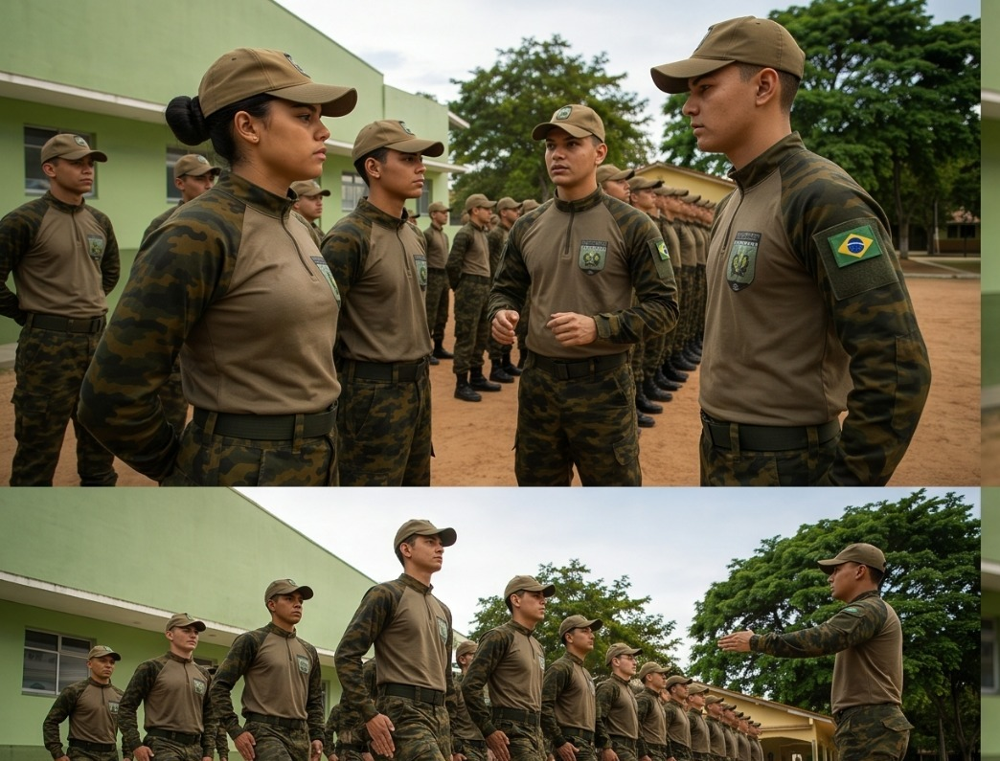
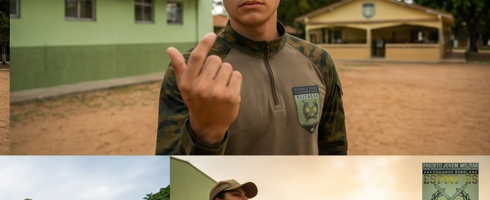
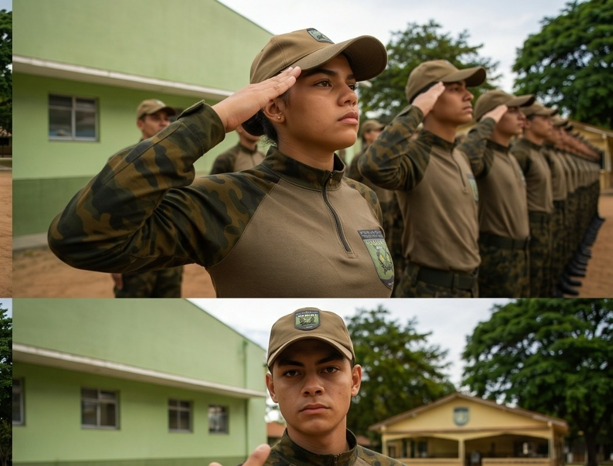

01
Ordem Unida
Coordenação, atenção, disciplina e trabalho coletivo.
Uma formação prática, disciplinar e cidadã, construída a cada atividade.
O Projeto Jovem Militar utiliza atividades práticas para desenvolver disciplina, responsabilidade, respeito, convivência e cidadania. Cada encontro faz parte de uma jornada de formação.

Coordenação, atenção, disciplina e trabalho coletivo.

Atividades físicas orientadas e desenvolvimento de hábitos saudáveis.

Valores, respeito, responsabilidade e convivência em sociedade.

Conhecimentos e orientações que ampliam a preparação para a vida.

Momentos de integração, reconhecimento e valorização da trajetória.

Participação e consciência sobre o papel do jovem na comunidade.

O ciclo de formação acompanha o aluno ao longo de 18 meses, organizando experiências que fortalecem disciplina, cidadania, convivência e preparação para os desafios da vida.
Cada experiência contribui para uma formação mais completa, com disciplina, respeito, cidadania e responsabilidade.
COMO PARTICIPAR →